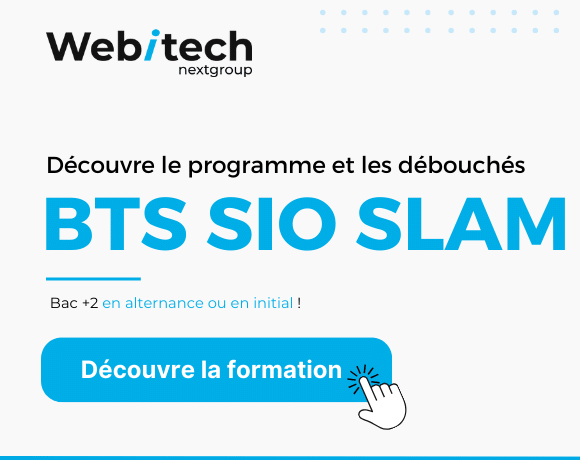
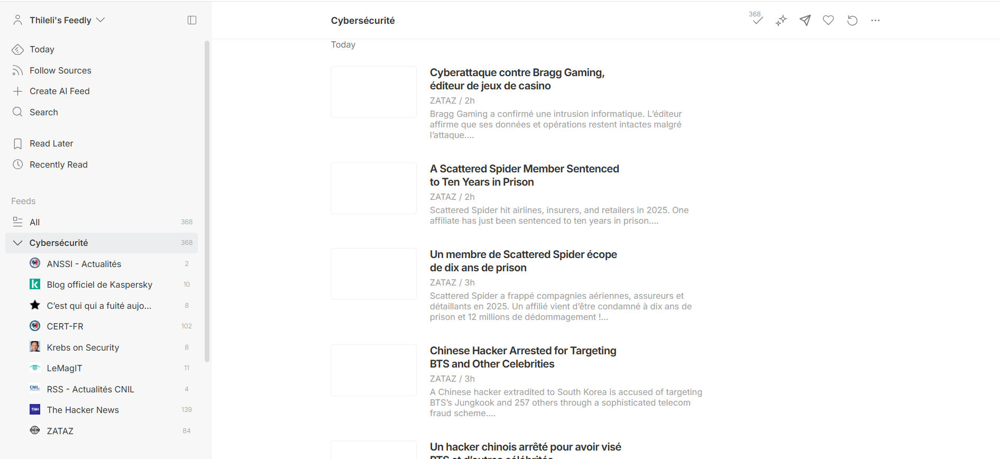

21 Novembre 2025
La veille technologique consiste à suivre les évolutions dans le domaine du numérique et de la cybersécurité, afin d’anticiper les nouvelles menaces et opportunités.
Ma veille porte sur la cybersécurité, en particulier sur le phishing et l’ingénierie sociale. L’objectif est de comprendre ces attaques et d’identifier les solutions de protection adaptées.
Feedly est un agrégateur de flux RSS qui me permet de centraliser différentes sources d’information et de suivre l’actualité en temps réel.


21 Novembre 2025
24 Novembre 2025
24 Novembre 2025
19 Novembre 2025
27 Février 2025